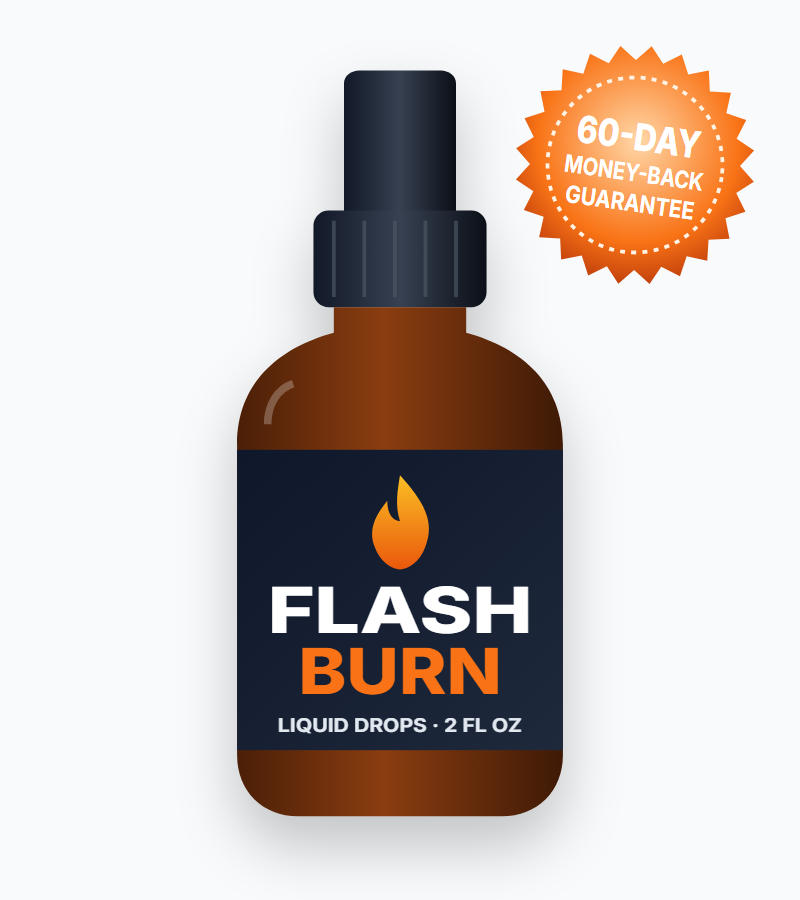
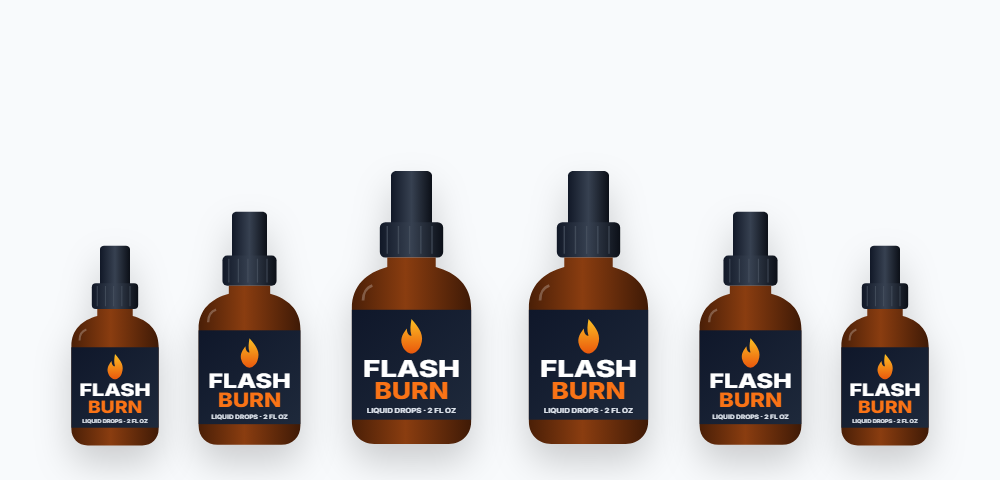

Stimulant Energy
Guarana and green tea supply caffeine and related compounds that can slightly raise energy use and alertness.*
What the FlashBurn label really says, how it compares with the sales page, and what to know before you buy

FlashBurn (also written Flash Burn) is a liquid supplement in a dropper bottle, sold for weight loss and a faster metabolism. In this FlashBurn review we go through the actual supplement facts label — which lists 22 ingredients in a 200 mg blend — point out where it differs from the sales page, explain the caffeine and side effects, and cover the current price and how to order safely.
FlashBurn is a weight-support supplement that comes as liquid drops in a 2 oz (60 ml) dropper bottle. You shake the bottle and take one or two droppers a day by mouth. One milliliter is a serving, and each bottle holds 60 servings.
The sales page describes FlashBurn as a "100% natural formula" that "attacks the harmful bacteria that sabotage weight loss" and promotes "good bacteria that activate fat burning." Its label, however, describes a fairly typical metabolism blend: plant extracts such as maca, guarana, green tea, African mango and gymnema, plus amino acids like L-carnitine, L-tyrosine and L-arginine.
The label names Loja Experience LTDA as the distributor, the same company behind several other liquid supplements sold online, and says the product is made in an FDA-registered facility. The FDA registers facilities; it does not approve supplements.
It's worth being clear up front: FlashBurn is a supplement, not a weight-loss medicine. No supplement replaces a calorie deficit, and dramatic results in ads should be read with caution.
Searching "flash burn"? FlashBurn the supplement is unrelated to flash burn of the eyes (welder's flash or arc eye), a painful UV injury that needs medical care.
Based on the label, the FlashBurn blend works in three general ways.*
Guarana and green tea supply caffeine and related compounds that can slightly raise energy use and alertness.*
Gymnema may dull the taste of sweetness, and African mango has small studies on appetite and waist size.*
L-carnitine, L-tyrosine, ginseng, eleuthero and maca are included for energy, focus and stamina.*
The sales page's main idea — that FlashBurn fights "bad gut bacteria" — isn't reflected on the label: there are no probiotics or prebiotic fibers in the formula. Grape seed and grapefruit extract have some antimicrobial lab data, but at these tiny amounts, a meaningful effect on gut bacteria is unlikely.
The biggest limitation is the dose. FlashBurn's whole blend is 200 mg per milliliter, shared by 22 ingredients — an average of about 9 mg each.
Here's what the FlashBurn label lists per 1 ml serving.
| Ingredient | Amount | Why it's included |
|---|---|---|
| Chromium (as picolinate) | 0.7 mcg (2% DV) | Blood sugar metabolism (token amount) |
| Proprietary blend | 200 mg | See list below |
| Maca root, grape seed, guarana seed, African mango seed | In blend | Energy, antioxidants, caffeine, appetite |
| Eleuthero root, astragalus root, panax ginseng | In blend | Adaptogens for energy and stamina |
| Green tea leaf, capsicum (cayenne), grapefruit | In blend | Thermogenic and caffeine sources |
| Gymnema leaf, coleus forskohlii root, raspberry ketones | In blend | Sugar cravings, fat metabolism claims |
| L-glutamine, L-tyrosine, L-arginine, beta-alanine, L-ornithine, L-tryptophan, L-carnitine, GABA | In blend | Amino acids for energy, mood and recovery |
| Monoammonium glycyrrhizinate (licorice) | In blend | Flavor and traditional use |
Other ingredients: glycerin, water, organic lemon extract, stevia extract, xylitol, sodium benzoate, potassium sorbate, citric acid, natural flavors. Serving size 1 ml; 60 servings per bottle.
Caffeine and green tea catechins have the most consistent (though modest) research for energy expenditure. Studies typically use 300+ mg of green tea extract; FlashBurn's whole blend is 200 mg.*
Irvingia seed extract has a few small trials showing weight and waist reductions at about 150 mg twice daily. Study quality has been questioned.*
Temporarily blocks sweet taste on the tongue and has been studied for blood sugar at 200–400 mg a day.*
Famous from TV, but human evidence for weight loss is essentially absent.*
L-carnitine helps move fat into cells' energy centers; supplementation studies use 1–3 g a day, far more than any drop can provide.*
The drops are sweetened with xylitol and stevia. Xylitol is safe for people but highly toxic to dogs, so store the bottle out of their reach.
When we compared the FlashBurn sales page with the supplement facts label shown on the vendor's own site, several things didn't line up. We think buyers should know:
Always check the label on the bottle you receive, and ask the vendor which formula they ship if anything is unclear.
| Ingredient | Typical study dose | Evidence for weight |
|---|---|---|
| Green tea extract + caffeine | 250–700 mg extract | Small effect (~1–2 kg over months) |
| African mango | 300 mg/day | Few small trials, quality concerns |
| Gymnema | 200–400 mg/day | Blood sugar & cravings; little on weight |
| Capsicum (capsaicin) | 2–6 mg capsaicinoids | Tiny rise in calorie burn |
| Coleus forskohlii | 250 mg 10% extract twice daily | Mixed |
| L-carnitine | 1–3 g/day | Modest in some meta-analyses |
| Raspberry ketones | — | No good human evidence |
FlashBurn's 200 mg serving is smaller than a single study dose of most of these ingredients — and it has to hold 22 of them. Even at two droppers (400 mg), the amounts remain far below research levels. No published trial has tested the FlashBurn formula itself.
Liquid supplements are sometimes promoted as "absorbing faster," but absorption doesn't make up for small doses.
Our take: FlashBurn is a broad "kitchen-sink" metabolism blend with mild stimulant content. It may give a small energy lift; meaningful weight loss would still depend on eating and activity changes.
Liquid "weight-loss drops" have become popular through social media ads. Before buying any of them, it helps to understand what the format can and can't do.
Drops are often marketed as absorbing faster than capsules. Some nutrients may start absorbing a little sooner in liquid form, but what matters for results is the amount of each active ingredient — and a single milliliter of liquid can only hold a few hundred milligrams of extracts. That's why most drops, like most "fat burner" blends, list many ingredients at very small amounts.
Weight-loss drops first became widely known through hCG diet drops, which the FDA and FTC warned companies about because over-the-counter versions had no proven effect. Today's drops are mostly herbal blends instead, but the marketing style — fast results, testimonials, and claims about "secret" mechanisms — is often similar.
Research consistently shows that sustained weight loss comes from a calorie deficit maintained over time, supported by enough protein, sleep and movement. Stimulants such as caffeine can increase calorie burn by a small amount, usually less than 100 calories a day — helpful, but not a substitute for changes in what you eat. Prescription medicines are the only products with large, proven effects, and they require a doctor.
Based on its ingredients, these are the benefits FlashBurn is designed to support.*
Guarana, green tea, ginseng and L-tyrosine may help with daytime energy.*
Gymnema can briefly reduce the taste of sugar.*
Capsicum and green tea are included for their small thermogenic effect.*
Grape seed and green tea supply antioxidant polyphenols.*
Adaptogens (eleuthero, astragalus, maca) and GABA are traditional energy and mood supports.*
No pills to swallow — one or two droppers a day.*
Based on the FlashBurn label:
A 60 ml bottle lasts 30 days at two droppers a day or 60 days at one. The vendor's packages treat each bottle as a 30-day supply.
Because the guarantee asks for at least 30 days of use, plan to evaluate FlashBurn between days 30 and 50 — track your weight, waist and energy weekly.
The sales page says "no side effects have been reported." Because the formula includes stimulants and active herbs, here's a more balanced view:
Stop taking FlashBurn and seek care if you notice chest pain, a racing or irregular heartbeat, severe headache or fainting.
The label says FlashBurn isn't for pregnant or nursing women, children under 18, or people with a known medical condition without a physician's advice.
FlashBurn is a liquid metabolism blend with many familiar ingredients at very small doses, and a sales page that doesn't match its own label. It may offer a mild energy lift, but it's unlikely to produce meaningful weight loss by itself. If you want to try it, check with your doctor about the caffeine and herbal interactions, buy from the official website so you're covered by the 60-day guarantee, and judge it on your own measurements.
Visit the FlashBurn Official WebsiteFlashBurn appears to be a real product with a real label, sold through a checkout that offers a 60-day refund, so it isn't a scam in the sense of taking money and shipping nothing. But the marketing raises genuine red flags: ingredients that don't match the label, "no side effects" claims for a caffeinated formula, repeated testimonials used across other products from the same seller, and advice to stop other products.
Independent sites such as consumer-protection blogs have also flagged FlashBurn advertising for exaggerated claims. If you buy, protect yourself: use the official order page, save your receipt, keep the bottles, and request a refund in writing before day 60 if it doesn't help.
| Option | How it works | Typical cost | Evidence |
|---|---|---|---|
| FlashBurn | 22-ingredient liquid blend, mild caffeine | $49–$79 per month | No product trial; tiny ingredient doses |
| Green tea extract | Catechins + caffeine at study doses | $10–$20 per month | Small, consistent effect |
| Prescription GLP-1 medicine | Reduces appetite, slows digestion | Varies widely | Strong (10–20% body weight) |
| Diet + activity | Calorie deficit, protein, daily steps, strength training | Free to low cost | Strongest foundation |
Any results with FlashBurn will come mostly from these habits:
Protein keeps you full longer and protects muscle while you lose fat.
High-volume, high-fiber foods make a calorie deficit easier.
Daily movement burns more calories over a week than most workouts.
Muscle supports metabolism, especially after 40.
Short sleep raises hunger hormones and cravings.
Sugary drinks and alcohol are easy calories to cut.
Many sites with names like flashbun.com and en-flashburns.com present themselves as the official FlashBurn store, sometimes with different ingredient lists or star ratings. To buy genuine Flash Burn drops:
For the guarantee and bonuses, order from the FlashBurn official website.
Each FlashBurn bottle holds 60 ml. Every package is covered by the 60-day money-back guarantee.
60-Day Supply · Try Two
$79/bottle
No bonuses
180-Day Supply
$49/bottle
+ 2 free e-books
90-Day Supply · Most Popular
$69/bottle
+ 2 free e-books
Prices checked on the official order page on October 18, 2026 and may change. The 3- and 6-bottle packages include two e-books, "Fortifying Vitamins" and "Controlled Metabolism Guide." One-time payment — no subscription.

FlashBurn orders from the official website come with a 60-day money-back guarantee from the date of purchase.
The vendor says that if, after at least 30 days of use, you're not completely satisfied, you can contact their support team by email. Keep your order details and contact them well before day 60.
Try FlashBurn Risk-FreeFlashBurn is a liquid dietary supplement sold for weight loss and metabolism support. Each 2 oz bottle contains 60 servings of a 200 mg proprietary blend of 22 ingredients, including maca, guarana, green tea, African mango, gymnema, raspberry ketones and L-carnitine, plus a small amount of chromium.
There is no published clinical trial on FlashBurn. A few of its ingredients, such as green tea, guarana and African mango, have small studies on weight, but FlashBurn's entire 200 mg blend is split across 22 ingredients, so each one is present at a small fraction of the amounts used in research. Any effect on weight is likely to be modest without diet and exercise changes.
FlashBurn is a liquid. The label describes it as liquid drops in a 2 oz (60 ml) dropper bottle. The suggested use is 1 or 2 droppers daily, placed in the mouth and swallowed, after shaking the bottle.
The FlashBurn label lists chromium (0.7 mcg) and a 200 mg proprietary blend of maca, grape seed, guarana, African mango, eleuthero, astragalus, green tea, gymnema, coleus forskohlii, capsicum, grapefruit, panax ginseng, raspberry ketones, L-glutamine, L-tyrosine, L-arginine, beta-alanine, monoammonium glycyrrhizinate, GABA, L-ornithine, L-tryptophan and L-carnitine.
FlashBurn contains guarana and green tea, both natural sources of caffeine. The label does not state the caffeine amount, which is likely small because the whole blend is 200 mg per serving. People sensitive to caffeine, or with heart rhythm problems or high blood pressure, should be cautious.
On the official order page FlashBurn costs $79 per bottle for 2 bottles ($158 plus shipping), $69 per bottle for 3 bottles ($207 with free US shipping) and $49 per bottle for 6 bottles ($294 with free US shipping). The 3- and 6-bottle packages include two free e-books.
Possible side effects include jitteriness, trouble sleeping or a faster heartbeat from guarana and green tea, stomach upset, and low blood sugar in people taking diabetes medicine because of gymnema. Coleus forskohlii can lower blood pressure. Talk to a doctor before use if you take any prescription medicine.
No. The sales page suggests stopping other products, but you should never stop or change prescribed medicine without talking to your doctor. Several FlashBurn ingredients can interact with blood pressure, diabetes and antidepressant medicines.
No. According to the vendor, FlashBurn is a one-time payment with no recurring charges or hidden subscriptions.
FlashBurn comes with a 60-day money-back guarantee from the date of purchase. The vendor asks that you use the product for at least 30 days before contacting support for a refund.
No. FlashBurn the supplement is unrelated to flash burn of the eyes, also called welder's flash or arc eye, which is a painful UV injury to the cornea that needs medical attention.
FlashBurn is sold through the vendor's own order page, which offers the package prices, bonuses and 60-day guarantee. Look-alike sites and marketplace listings may not include the guarantee.
Get FlashBurn for as little as $49 per bottle with free US shipping on the 6-bottle package — with two free e-books and a 60-day money-back guarantee.
Order FlashBurn Now